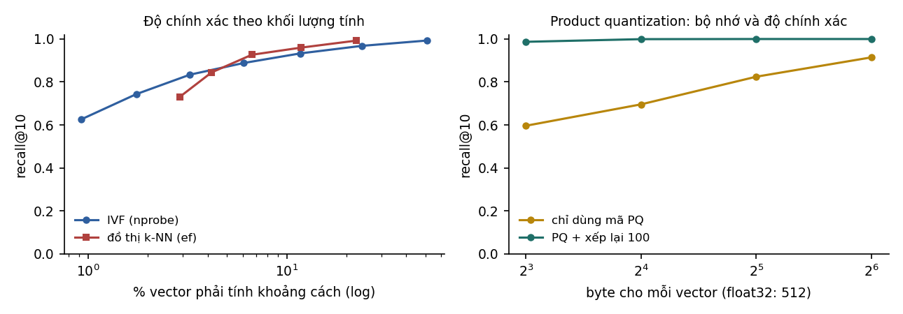

7Cơ sở dữ liệu vector#
Chương 6 so truy vấn với mọi tài liệu trong kho. Với vài nghìn tài liệu, cách này đủ nhanh; với hàng triệu hoặc hàng tỉ vector thì không. Để thấy chậm tới mức nào, ta tính thử trên một kho cỡ vừa, rồi xét ba ý tưởng mà các cơ sở dữ liệu vector dùng để khỏi phải so với toàn bộ kho: chia không gian thành ô, nén vector, và đi trên đồ thị láng giềng.
7.1Tìm kiếm chính xác và tìm kiếm gần đúng#
Tìm vector gần truy vấn nhất trong vector chiều bằng cách tính mọi tích vô hướng tốn phép nhân cộng, và phải đọc toàn bộ số từ bộ nhớ. Với đoạn văn và chiều ở dạng số thực 32 bit, kho vector chiếm GB, và mỗi truy vấn phải đọc hết lượng dữ liệu đó. Với băng thông bộ nhớ khoảng 50 GB/s của một máy chủ CPU, mỗi truy vấn mất khoảng 0,6 giây chỉ để đọc dữ liệu, quá chậm cho một ứng dụng tương tác phục vụ nhiều người.
Lối ra là chấp nhận tìm gần đúng. Tìm kiếm láng giềng gần đúng (approximate nearest neighbor, ANN) đổi một phần nhỏ độ chính xác lấy tốc độ: đôi khi bỏ sót một vài láng giềng thật, đổi lại chỉ phải xét một phần nhỏ của kho. Độ chính xác được đo bằng recall@k so với tìm kiếm chính xác, tức tỉ lệ trong láng giềng thật có mặt trong kết quả của chỉ mục. Mọi chỉ mục ANN đều có tham số điều khiển sự đánh đổi này.
Thí nghiệm ở chương này dùng 4 419 vector LSA 128 chiều của các câu trong kho văn bản ở Mục 6.5, và 300 truy vấn là các câu được tách riêng khỏi kho. Với số vector nhỏ như vậy, tìm kiếm chính xác vẫn nhanh; thí nghiệm dùng để thấy hình dạng của đường đánh đổi, và các tỉ lệ đo được chuyển được sang kho lớn hơn theo cùng xu hướng.
7.2Chỉ mục IVF#
Ý tưởng đầu tiên là chia không gian thành các ô, rồi chỉ tìm trong những ô gần truy vấn. Chỉ mục inverted file (IVF) làm việc này bằng K-means (Chương 15 của Nền tảng). Khi xây chỉ mục, ta chạy K-means với cụm trên các vector, rồi lưu mỗi vector vào danh sách của tâm cụm gần nó nhất. Khi tìm kiếm, ta tính khoảng cách từ truy vấn tới tâm cụm, chọn cụm gần nhất, rồi chỉ so truy vấn với các vector trong những cụm đó.
Láng giềng thật của truy vấn có thể nằm ở một cụm không được chọn, nhất là khi truy vấn nằm gần biên giữa các cụm. Tăng làm giảm khả năng này nhưng tăng khối lượng tính, như bảng dưới cho thấy với 128 cụm.
| (trên 128 cụm) | recall@10 | Tỉ lệ vector phải so |
|---|---|---|
| 1 | 0,627 | 0,9% |
| 2 | 0,743 | 1,7% |
| 4 | 0,834 | 3,3% |
| 8 | 0,888 | 6,1% |
| 16 | 0,933 | 11,7% |
| 32 | 0,968 | 23,8% |
| 64 | 0,993 | 50,9% |
Với 6% khối lượng tính của tìm kiếm chính xác, IVF tìm được 89% láng giềng thật; muốn đạt 97% thì phải so gần một phần tư kho. Đường cong có dạng lợi ích giảm dần điển hình: mỗi lần gấp đôi mang lại ít recall hơn lần trước.
7.3Product quantization#
IVF giảm số vector phải so nhưng không giảm bộ nhớ, vì mọi vector vẫn được lưu đầy đủ. Ý tưởng thứ hai là nén chính các vector. Product quantization (PQ; Jégou, Douze và Schmid, 2011) chia mỗi vector chiều thành đoạn con, mỗi đoạn chiều. Với mỗi đoạn con, PQ chạy K-means với 256 tâm trên toàn bộ dữ liệu, được một bảng mã (codebook) riêng cho đoạn đó. Mỗi vector sau đó được lưu bằng chỉ số, mỗi chỉ số là tâm gần nhất của đoạn con tương ứng và chiếm 1 byte. Một vector 128 chiều số thực 32 bit (512 byte) như vậy chỉ còn byte.
Khi tìm kiếm, với mỗi truy vấn ta tính trước một bảng tích vô hướng giữa từng đoạn con của truy vấn với 256 tâm của đoạn đó. Tích vô hướng xấp xỉ giữa truy vấn và một vector nén khi đó bằng tổng của giá trị tra bảng, không cần giải nén. Cách tính này gọi là khoảng cách bất đối xứng (asymmetric distance), vì truy vấn giữ nguyên còn vector trong kho đã bị nén.
| (byte mỗi vector) | Tỉ lệ nén | recall@10 | recall@10 sau khi xếp lại 100 kết quả đầu bằng vector gốc |
|---|---|---|---|
| 8 | 64 lần | 0,596 | 0,987 |
| 16 | 32 lần | 0,696 | 0,999 |
| 32 | 16 lần | 0,825 | 1,000 |
| 64 | 8 lần | 0,915 | 1,000 |
Chỉ dùng mã nén thì recall giảm rõ khi nén mạnh. Nhưng thứ hạng xấp xỉ vẫn đưa được hầu hết láng giềng thật vào nhóm 100 kết quả đầu, nên xếp lại 100 kết quả đó bằng vector gốc cho recall gần như tuyệt đối, ngay cả khi nén 64 lần. Đó là thiết kế phổ biến cho kho rất lớn: giữ mã PQ nhỏ trong bộ nhớ nhanh để lọc, lưu vector gốc ở bộ nhớ chậm hơn để xếp lại một số ít ứng viên. IVF và PQ thường được dùng cùng nhau dưới tên IVF-PQ: IVF chọn cụm, PQ tính khoảng cách xấp xỉ trong cụm.
Người đã đọc giáo trình Quantization sẽ nhận ra một ý tưởng quen thuộc: đổi độ chính xác của từng giá trị lấy bộ nhớ, rồi bù lại độ chính xác ở bước cuối khi cần.
7.4Đồ thị láng giềng và HNSW#
Ý tưởng thứ ba không chia không gian mà nối các vector thành một đồ thị, trong đó mỗi vector được nối với một số láng giềng gần nó. Tìm kiếm bắt đầu từ một vài đỉnh, rồi lặp lại việc đi tới láng giềng gần truy vấn hơn, giữ một hàng đợi gồm ứng viên tốt nhất, cho tới khi không còn cải thiện. Trực giác giống việc hỏi đường: mỗi người chỉ biết vài người quen ở gần mình, nhưng cứ đi theo người quen gần đích nhất thì sau vài bước sẽ tới nơi.
Thí nghiệm dựng đồ thị -NN, mỗi đỉnh nối với 16 láng giềng gần nhất, rồi tìm kiếm với các giá trị khác nhau.
| recall@10 | Số phép tính khoảng cách trung bình | So với tìm kiếm chính xác | |
|---|---|---|---|
| 10 | 0,731 | 128 | 2,9% |
| 20 | 0,845 | 185 | 4,2% |
| 40 | 0,927 | 295 | 6,7% |
| 80 | 0,960 | 523 | 11,8% |
| 160 | 0,992 | 987 | 22,3% |

Đặt cạnh IVF ở cùng khoảng 6 tới 7% khối lượng tính, đồ thị đạt recall 0,927 trong khi IVF đạt 0,888. Lợi thế này của phương pháp đồ thị cũng được ghi nhận trên các bộ đánh giá chuẩn, và giải thích vì sao HNSW trở thành chỉ mục mặc định của nhiều cơ sở dữ liệu vector.
HNSW (Hierarchical Navigable Small World; Malkov và Yashunin, 2018) cải tiến tìm kiếm đồ thị ở hai điểm. Thứ nhất, nó dựng nhiều tầng đồ thị lồng nhau: tầng trên cùng có rất ít đỉnh, nối với nhau bằng các cạnh dài; mỗi tầng dưới có nhiều đỉnh hơn; tầng dưới cùng chứa mọi đỉnh. Tìm kiếm bắt đầu ở tầng trên để nhanh chóng tới đúng vùng, rồi xuống dần để tìm chính xác, giống cách tra bản đồ từ cấp quốc gia xuống cấp phố. Thứ hai, nó chọn cạnh bằng một quy tắc giữ lại các cạnh đi theo nhiều hướng khác nhau thay vì chỉ giữ các láng giềng gần nhất, nhờ đó đồ thị liên thông tốt hơn. HNSW có ba tham số chính: là số cạnh mỗi đỉnh; là độ rộng tìm kiếm khi xây, ảnh hưởng tới chất lượng đồ thị; còn điều khiển đánh đổi giữa recall và tốc độ khi truy vấn, như trong bảng trên.
Nhược điểm của HNSW là bộ nhớ. Ngoài vector gốc, mỗi đỉnh lưu khoảng cạnh ở tầng dưới cùng, và toàn bộ đồ thị thường phải nằm trong RAM để truy cập ngẫu nhiên nhanh. Với kho hàng tỉ vector, người ta dùng các thiết kế như IVF-PQ hoặc chỉ mục đồ thị đặt trên ổ SSD (DiskANN; Subramanya và cộng sự, 2019).
7.5Lọc theo metadata và cập nhật chỉ mục#
Chỉ mục ANN mới là một phần của cơ sở dữ liệu vector. Ứng dụng thật còn cần nhiều chức năng khác, và chức năng gây nhiều rắc rối nhất là lọc theo metadata. Ta thường không muốn tìm các đoạn văn gần truy vấn nhất trong toàn bộ kho, mà trong số tài liệu người dùng có quyền xem, hoặc tài liệu thuộc năm 2025. Lọc sau khi tìm (post-filtering) đơn giản nhưng có thể trả về quá ít kết quả khi bộ lọc chặt: lấy 10 láng giềng rồi lọc có thể còn lại 0. Lọc trước khi tìm (pre-filtering) chính xác nhưng làm hỏng giả định của chỉ mục đồ thị, vì đường đi tới đích có thể phải qua các đỉnh bị loại. Các cơ sở dữ liệu vector hiện đại có cơ chế riêng để đưa bộ lọc vào chính quá trình duyệt chỉ mục. Với dữ liệu có phân quyền, bộ lọc quyền truy cập là yêu cầu an toàn chứ không chỉ là một tính năng (Mục 11.3).
Ngoài lọc, cơ sở dữ liệu vector thường lưu cả chỉ mục từ khoá (BM25) bên cạnh chỉ mục vector để tìm kiếm kết hợp như Mục 6.5. Nó cũng phải xử lý việc dữ liệu thay đổi. Tài liệu sửa thì embedding phải tính lại. Chỉ mục đồ thị xử lý việc xoá bằng cách đánh dấu rồi dọn định kỳ, còn IVF cần xây lại khi phân phối dữ liệu thay đổi nhiều, vì các tâm cụm cũ không còn đại diện. Thay đổi lớn nhất là đổi mô hình embedding. Vector của hai mô hình khác nhau không so sánh được với nhau, nên đổi mô hình nghĩa là tính lại embedding cho toàn bộ kho; vì vậy cần lưu văn bản gốc cùng với vector và ghi rõ mô hình đã dùng.
7.6Các công cụ lưu trữ vector#
Các công cụ lưu trữ và tìm kiếm vector được nhắc tới trong roadmap có thể chia thành ba nhóm. Nhóm thứ nhất là thư viện, tiêu biểu là FAISS (Johnson, Douze và Jégou, 2019): nó cung cấp các chỉ mục IVF, PQ, HNSW và nhiều biến thể, chạy trên CPU và GPU, nhưng không tự lo lưu trữ, cập nhật hay lọc theo metadata. Nhóm thứ hai là cơ sở dữ liệu vector chuyên dụng như Chroma, Qdrant, Weaviate, Pinecone (dịch vụ được quản lý) và LanceDB (nhúng trong ứng dụng, lưu theo cột); chúng lo luôn lưu trữ, lọc, cập nhật, phân quyền và mở rộng. Nhóm thứ ba là các cơ sở dữ liệu có sẵn được thêm tính năng vector: PostgreSQL với tiện ích pgvector (có chỉ mục HNSW và IVFFlat; Supabase dùng cách này), MongoDB Atlas Vector Search, và tính năng tương tự của nhiều hệ quản trị khác.
Với phần lớn ứng dụng dưới vài triệu vector, lựa chọn hợp lý là dùng hệ cơ sở dữ liệu đang có nếu nó hỗ trợ vector, vì giữ vector cùng chỗ với dữ liệu nghiệp vụ giúp việc lọc theo quyền và cập nhật đồng bộ dễ hơn nhiều. Cơ sở dữ liệu vector chuyên dụng đáng cân nhắc khi quy mô lớn, cần hiệu năng cao, hoặc cần những tính năng như tìm kiếm kết hợp tích hợp sẵn.
7.7Tóm tắt#
Tìm kiếm chính xác phải đọc toàn bộ kho vector cho mỗi truy vấn, nên với hàng triệu vector cần chuyển sang tìm kiếm gần đúng, đo bằng recall@k so với tìm kiếm chính xác. IVF chia không gian bằng K-means và chỉ tìm trong vài cụm gần nhất; trên kho thí nghiệm, nó đạt recall 0,888 với 6% khối lượng tính. Product quantization nén vector xuống vài chục byte, và xếp lại 100 kết quả đầu bằng vector gốc đưa recall về gần 1 ngay cả khi nén 64 lần. Tìm kiếm trên đồ thị láng giềng đạt recall 0,927 ở cùng khối lượng tính, và HNSW thêm cấu trúc nhiều tầng để trở thành chỉ mục mặc định của nhiều hệ thống. Ngoài chỉ mục, cơ sở dữ liệu vector còn phải lọc theo quyền truy cập, cập nhật dữ liệu và chịu được việc đổi mô hình embedding; với kho dưới vài triệu vector, tính năng vector của hệ cơ sở dữ liệu đang dùng thường là đủ.
Có embedding và chỉ mục, ta đã có phần truy xuất. Chương 8 ghép phần đó với mô hình ngôn ngữ thành một hệ thống trả lời câu hỏi dựa trên tài liệu, và đo xem việc ghép này giúp được bao nhiêu.
Tự kiểm tra
3 câu. Chọn đáp án để xem ngay lời giải thích.
1Chỉ mục IVF đánh đổi điều gì?
Vì sao: Ở Mục 7.2, so 6,1% số vector cho recall@10 là 0,888; muốn 0,968 cần so 23,8%.2Trong thí nghiệm product quantization ở Mục 7.3, nén 64 lần rồi xếp lại 100 ứng viên bằng vector gốc cho recall@10 bao nhiêu?
Vì sao: Chỉ dùng mã nén cho 0,596, nhưng hầu hết láng giềng thật vẫn nằm trong 100 ứng viên đầu, nên xếp lại khôi phục gần hết độ chính xác.3Nhược điểm chính của HNSW với kho hàng tỉ vector là gì?
Vì sao: Với kho rất lớn, IVF-PQ hoặc chỉ mục đồ thị trên SSD như DiskANN được dùng thay thế (Mục 7.4).
Đã trả lời 0/3